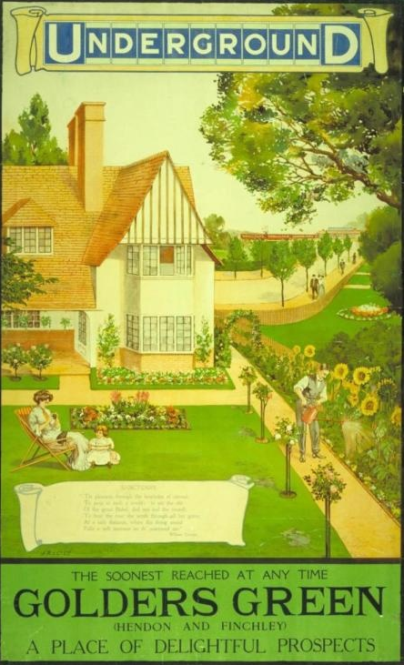
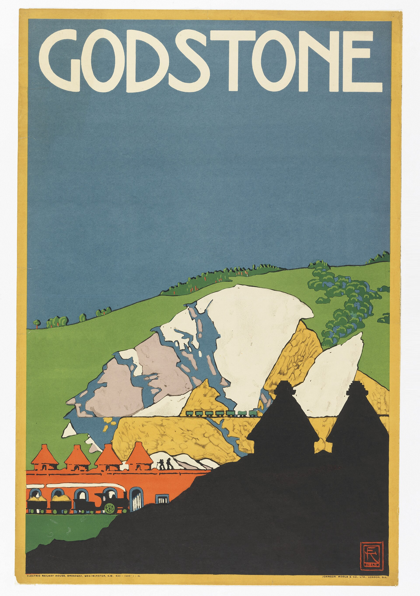
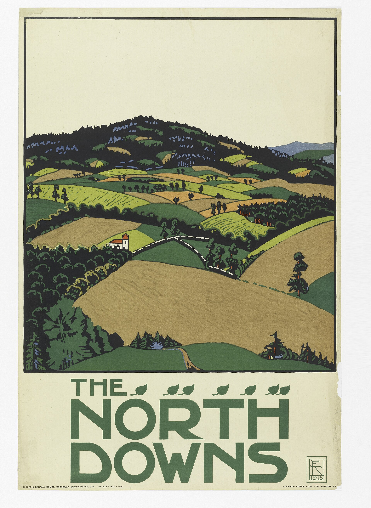
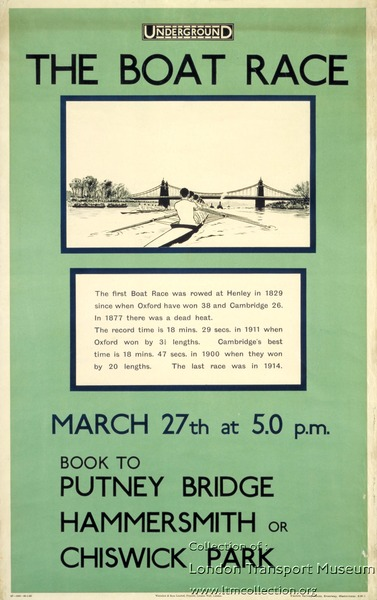

The Cutty Sark seen from outside the Old Royal Naval College in Greenwich. Photo: Robert Lamb. CC BY-SA 2.0, Wikimedia Commons.
Lesson 5: Posters: selling the city
Activities in this lesson: CECompréhension écrite · POSpeaking
Lesson outline
Lesson of 55 minutes, timed for 52 minutes.
8 min · Getting started
CE14 min · Documents
12 min · Activities
PO8 min · Role play : everyone speaks at least once
10 min · Gap-fill et trace écrite
Written record. Two or three key sentences from the lesson.
Participation. everyone speaks at least once: one sentence each.
Homework for next lesson. The homework already given on the page.
Stopping point. End of this lesson. The homework is already given lower down on the page.
Emergency exit · 8 min. If time runs short at this stopping point, we condense: we dictate a short written record (two or three key sentences from the lesson) ; a round of the class, one sentence each, so that everyone has spoken at least once; the homework, already given on the page, is written on the board.
Part 5. How did the Underground sell London to Londoners?
Objectives
Analyse a poster
Use the language of persuasion
Getting started
What makes you want to go somewhere? A picture, a slogan, a price?
CEDocuments

Underground poster for Golders Green, 1908. Unknown artist. Public domain, Wikimedia Commons.
Horace Taylor, Brightest London is best reached by Underground, poster, 1924. Public domain, Wikimedia Commons.Edward McKnight Kauffer, Winter Sales are best reached by the Underground, poster, 1922, Cooper Hewitt, Smithsonian Design Museum, 1963-39-22. Public domain, Wikimedia Commons.
The soonest reached at any time. Golders Green. A place of delightful prospects.Text of an Underground poster, 1908.

Godstone, Underground poster, 1915. Edward McKnight Kauffer. Public domain, Wikimedia Commons.

The North Downs, Underground poster, 1915. Edward McKnight Kauffer. Public domain, Wikimedia Commons.

The Boat Race, Underground poster, 1920. Unknown artist. Public domain, Wikimedia Commons.
The test of the goodness of a thing is its fitness for use. If it fails on this first test, no amount of ornamentation or finish will make it any better; it will only make it more expensive, more foolish.Frank Pick, publicity officer and later chief executive of the Underground.
Activities
Describe the Golders Green poster: place, people, colours, slogan.
What promise does the poster make?
Compare it with the posters of 1915 by Edward McKnight Kauffer.
Which poster would make you take the Tube? Why?
Sentence starters
The poster shows...
The slogan promises...
The colours suggest...
This poster is persuasive because...
PORole play
An advertising team in 1915 pitches a poster to Frank Pick.
Gap-fill worksheet
Word bank: prospects, Kauffer, use
Golders Green is a place of delightful ______.
Edward McKnight ______ designed the Godstone poster.
Pick wanted fitness for ______.
Answer key
prospects
Kauffer
use
Homework
Design a poster for a station you like, with a slogan.
Assessment grid
Criteria
Level 1
Level 2
Level 3
Level 4
Content
Few ideas
Some ideas
Clear ideas
Rich, precise ideas
Language
Many errors
Some errors
Mostly correct
Accurate and varied
Interaction / organisation
Little
Basic
Good
Fluent and natural
Links reminder
Spirale de Gorse
Méthode conçue par Madame Carole Paoli Pompougnac. Le nom rend hommage à sa grand-mère par alliance, Madame Armandine Gorse, avec un S. On gravit un texte, un audio ou une image comme une pente : chaque tour est une prise plus haute. On part de ce qui saute aux yeux, puis l'attention se resserre, jusqu'à la pointe, le sommet où l'essentiel se laisse voir. Quatre tours, puis la pointe. À appliquer, dans chaque lesson, au document principal (texte, image ou audio). Les réponses détaillées restent en Teacher version.
Spirale de Gorse, quatre tours puis la pointe. Méthode conçue par Madame Carole Paoli Pompougnac.
1
Je remarque (I notice)
Ce qui saute aux yeux, la première impression.
I notice… / This is about…
2
Je repère (I spot)
Un détail, un passage, un élément plus net.
I spot… / The key word is…
3
Je comprends (I understand)
Ce que ces éléments permettent de comprendre.
This shows that… / They have in common…
4
J'anticipe (I anticipate)
La visée du texte, ce qu'il faut en faire.
The text wants me to… / I anticipate…
5
Je trouve le sens (I find the meaning)
La pointe, le point final : l'essentiel que l'on peut défendre, et sa limite. Ce point final cadre et recentre la démarche. Il évite le hors-sujet et les conclusions hâtives qui fausseraient l'analyse du texte. On peut finir par une brève ouverture sur un autre débat.
The point is… / I keep to the text: … / I stay focused on… / Beyond this, other questions may arise and open up further exploration.
If a student cannot attend class or is in hospital
Mind the Gap: the London Underground (Version B, bac pro) · Première baccalauréat professionnel, B1 · British Transport: A Long Heritage, séquence 2
Comment travailler
Faire les 6 lessons dans l’ordre, une lesson par moment de travail de 30 à 40 minutes. Les jours de fatigue, faire seulement la version courte (15 minutes) : rien n’est perdu, la suite se rattrape au retour.
Ouvrir la page de la lesson (lien « Documents ») : textes, images, vidéos et enregistrements y sont en libre accès. Sans connexion, travailler avec la fiche imprimable (PDF, Word ou LibreOffice) proposée en téléchargement.
Chercher d’abord, seul et sans traducteur, puis cliquer sur « Show the answer » pour se corriger, avec un stylo d’une autre couleur.
Speaking et interaction en travail seul : enregistrer un message vocal (téléphone ou ENT), ou écrire le texte qui serait dit, y compris les répliques des deux rôles.
Recopier la trace écrite de chaque lesson dans le cahier : elle sert pour les évaluations.
Les évaluations sont accessibles dans cette version : les faire au moment indiqué, sans aide, sans document sauf mention contraire, puis les envoyer.
Envoyer le travail par la messagerie de l’ENT (photo nette ou fichier) ou le rendre au retour. L’enseignante corrige et renvoie un commentaire.
CO Regarder le reel sur Instagram deux fois : une fois pour le plaisir, une fois avec un stylo (6 min).
Spirale de Gorse sur le document principal de la lesson : quatre tours, puis la pointe (6 min).
CE Activités : dire ce qui se passe en trois phrases, lister ce qu’on voit à l’arrière-plan, trouver les références aux histoires britanniques célèbres, choisir le moment le plus drôle et le type d’humour (ironie, understatement, absurde, autodérision) ; expliquer l’ironie de la photo de Baker Street (10 min).
PO À la place du jeu de rôle : enregistrer une description d’une minute du reel pour quelqu’un qui ne l’a pas vu, puis répondre à trois questions qu’un proche pose ou qu’on se pose soi-même (5 min).
PE Fiche à trous, puis devoir : présenter en cinq phrases une autre publicité ou un sketch britannique (7 min).
Lesson summary
Copy it into your exercise book.
The ad is about the London Underground. In the background, I can see many details.
Sherlock Holmes with a pipe next to a No smoking sign is ironic.
Check your answers
Gap-fill: The ad is about the London ______.
Underground
Gap-fill: Sherlock Holmes with a pipe next to a No smoking sign is ______.
ironic
Version courte (15 min) : regarder le reel, faire la fiche à trous et recopier la trace écrite.
À envoyer ou à rendre : la spirale, les réponses aux activités, l’enregistrement et la fiche à trous.
CE Lire le texte sur le Metropolitan Railway et observer la gravure de Baker Street vers 1863 (8 min).
Spirale de Gorse sur le document principal de la lesson : quatre tours, puis la pointe (6 min).
CEPE Activités : la date, les deux terminus, la méthode de construction ; expliquer cut and cover avec ses mots ; pourquoi la réponse de Palmerston relève de l’humour britannique ; décrire l’odeur et le bruit en 1863 (10 min).
PI Jeu de rôle, un journaliste du Times interroge un passager après le premier trajet, en jouant les deux rôles : écrire le dialogue (huit à dix répliques), puis l’enregistrer ; ou le jouer au téléphone avec l’enseignante (8 min).
PE Fiche à trous, puis devoir : la carte postale d’un passager de 1863 (7 min).
Lesson summary
Copy it into your exercise book.
The Metropolitan Railway opened in 1863, between Paddington and Farringdon. It was the first underground railway in the world.
It was built by cut and cover. On the first day it carried 38,000 passengers.
Check your answers
When did the Metropolitan Railway open?
On 10 January 1863.
How many passengers on the first day?
38,000
Version courte (15 min) : lire le texte, faire la fiche à trous et recopier la trace écrite.
À envoyer ou à rendre : la spirale, les réponses, le dialogue écrit ou enregistré, la fiche et la carte postale.
CE Lire le texte sur la City and South London Railway et sur Harry Beck ; comparer la carte de 1908 et la carte actuelle (8 min).
Spirale de Gorse sur le document principal de la lesson : quatre tours, puis la pointe (6 min).
CEPE Activités : trois différences entre les deux cartes ; pourquoi Beck a choisi des lignes droites ; un exemple de distance fausse ; l’origine du surnom padded cells (10 min).
PI Jeu de rôle, un passager perdu avec la carte de 1908 et un agent qui l’aide avec l’idée de Beck, en jouant les deux rôles : écrire le dialogue (huit à dix répliques), puis l’enregistrer ; ou le jouer au téléphone avec l’enseignante (8 min).
PE Fiche à trous, puis devoir : dessiner une carte à la manière de Beck de sa ville ou de son lycée (7 min).
Lesson summary
Copy it into your exercise book.
The first deep level tube opened in 1890. Harry Beck drew his map in 1931; it was published in 1933.
Beck used straight lines because only the connections mattered to passengers.
Check your answers
When did Harry Beck draw his map?
In 1931 (published in 1933).
The carriages were nicknamed padded ______.
cells
Version courte (15 min) : lire le texte, faire la fiche à trous et recopier la trace écrite.
À envoyer ou à rendre : la spirale, les réponses, le dialogue, la fiche et la carte.
CE Lire le tableau des lignes (couleur, lieux desservis) (6 min).
Spirale de Gorse sur le document principal de la lesson : quatre tours, puis la pointe (6 min).
CEPE Activités : la ligne qui va à Heathrow ; de Paddington à Westminster ; une journée avec trois lieux et trois lignes ; une station de la Bakerloo où changer pour la Victoria (10 min).
PI Jeu de rôle, un touriste à King’s Cross St Pancras demande le chemin de Camden Town par la Northern line, en jouant les deux rôles : écrire le dialogue (huit à dix répliques), puis l’enregistrer ; ou le jouer au téléphone avec l’enseignante (8 min).
PE Fiche à trous, puis devoir : l’itinéraire de Baker Street à Canary Wharf (7 min).
Lesson summary
Copy it into your exercise book.
Giving directions: Take the Northern line to Camden Town. Change at Oxford Circus for the Victoria line.
Check your answers
Which line serves Heathrow Airport?
The Piccadilly line.
Where do the Bakerloo and Victoria lines meet?
At Oxford Circus.
Version courte (15 min) : lire le tableau, faire la fiche à trous et recopier la trace écrite.
À envoyer ou à rendre : la spirale, les réponses, le dialogue, la fiche et l’itinéraire.
CE Observer les affiches de Golders Green (1908), de Horace Taylor (1924) et d’Edward McKnight Kauffer (1915, 1922) (6 min).
Spirale de Gorse sur le document principal de la lesson : quatre tours, puis la pointe (6 min).
CEPE Activités : décrire l’affiche de Golders Green (lieu, personnes, couleurs, slogan) ; la promesse qu’elle fait ; la comparer avec les affiches de Kauffer ; laquelle donne envie de prendre le métro, et pourquoi (10 min).
PO À la place du jeu de rôle : enregistrer, en une minute, le pitch d’une affiche à Frank Pick, avec le langage de la persuasion (6 min).
PE Fiche à trous, puis devoir : créer l’affiche d’une station, avec un slogan (8 min).
Lesson summary
Copy it into your exercise book.
Golders Green is a place of delightful prospects. Edward McKnight Kauffer designed the Godstone poster.
Frank Pick wanted fitness for use.
Check your answers
Gap-fill: Pick wanted fitness for ______.
use
Who designed the Godstone poster?
Edward McKnight Kauffer.
Version courte (15 min) : décrire une affiche, faire la fiche à trous et recopier la trace écrite.
À envoyer ou à rendre : la spirale, les réponses, l’enregistrement, la fiche et l’affiche.
Lesson 6 · Mind the gap: British humour underground
CE Lire le texte sur Mind the gap, les tableaux blancs des stations et l’histoire des noms de station (6 min).
Spirale de Gorse sur le document principal de la lesson : quatre tours, puis la pointe (6 min).
CEPE Activités : pourquoi Mind the gap est devenu un symbole ; l’histoire d’un nom de station ; écrire un message drôle ou poétique pour un tableau blanc ; comparer avec l’humour du reel de la lesson 1 (12 min).
PI Jeu de rôle, un agent de station répond par une plaisanterie à chaque plainte d’un passager grincheux, en jouant les deux rôles : écrire le dialogue (huit à dix répliques), puis l’enregistrer ; ou le jouer au téléphone avec l’enseignante (8 min).
PE Fiche à trous, puis devoir : préparer la tâche finale et faire ses flashcards (page Games) (5 min).
Lesson summary
Copy it into your exercise book.
Mind the gap was introduced around 1968. Sherlock Holmes lived in Baker Street. Platform 9¾ is at King's Cross.
Check your answers
When was Mind the gap introduced?
Around 1968.
Where is Platform 9¾?
At King’s Cross.
Version courte (15 min) : lire le texte, écrire le message de tableau blanc et recopier la trace écrite.
À envoyer ou à rendre : la spirale, les réponses, le message de tableau blanc, le dialogue et la fiche.
Lesson 7 · Final task: a guide for a French visitor
PETâche finale, évaluée : créer un guide pour un visiteur français, avec un trajet en métro, deux histoires de stations, une affiche décrite, un message de tableau blanc et le reel présenté en quelques phrases (25 min).
PO Présenter le guide à l’oral, deux minutes, en s’enregistrant (critères : faits et documents 8, langue 8, argumentation, humour et créativité 4) (10 min).
Lesson summary
Copy it into your exercise book.
The plan of the task in three points: the route, the stories and the poster, the humour (whiteboard message and reel).
Version courte (15 min) : le trajet, une histoire de station et une présentation d’une minute.
À envoyer ou à rendre : le guide et l’enregistrement.
CEPESummative assessment (accessible dans cette version), sur 20 : lecture (18 min), lignes et itinéraires (12 min), écriture (22 min). La faire sans aide et sans les notes, en notant l’heure de début et de fin ; relire sa copie.
Version courte (15 min) : la lecture et la partie lignes et itinéraires.
À envoyer ou à rendre : la copie, avec les heures de début et de fin.
Garder le lien avec la classe
Un message court à l’enseignante par l’ENT suffit pour dire où en est le travail ou poser une question, même sans avoir tout fini.
Un ou une camarade volontaire peut transmettre les documents distribués en classe et les nouvelles du groupe.
À l’hôpital ou à domicile, l’enseignant de l’école à l’hôpital ou du SAPAD peut accompagner ce parcours : lui montrer cette page.
Si une PFMP est manquée ou décalée, l’équipe de la section indique ce qui sera rattrapé ; les tâches professionnelles de ce parcours peuvent s’appuyer sur le métier préparé.
Au retour, un point de dix minutes avec l’enseignante permet de vérifier les traces écrites et de rattraper l’oral.